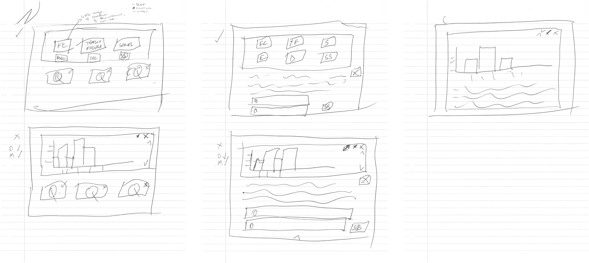
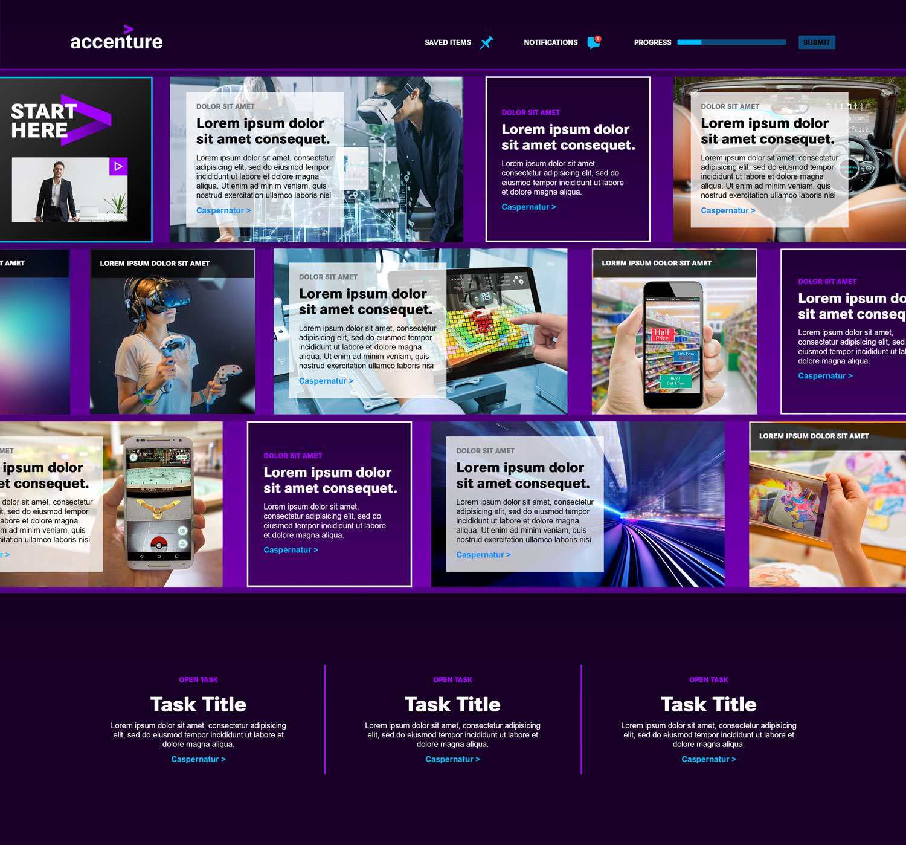
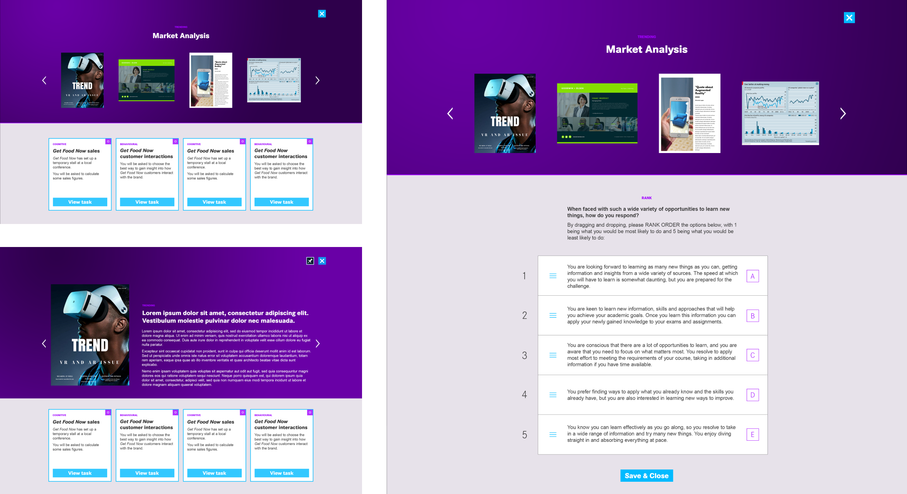
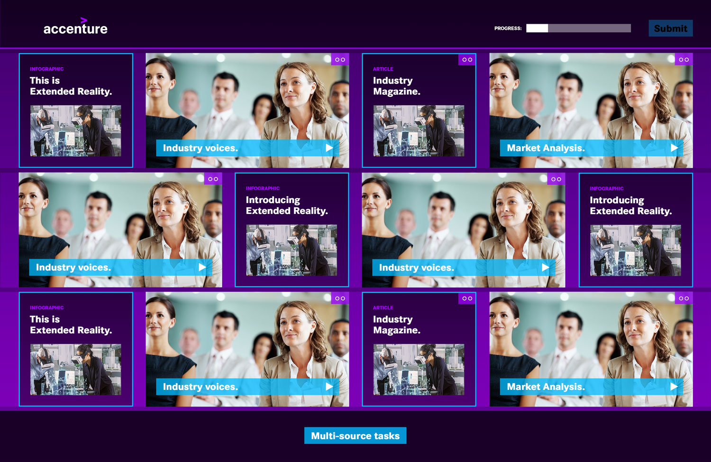
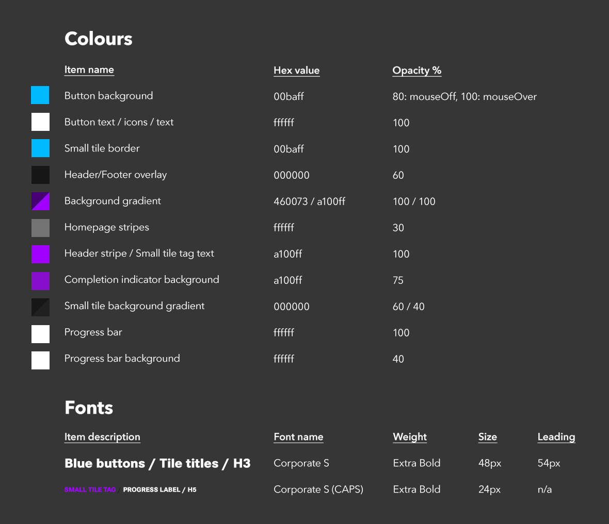
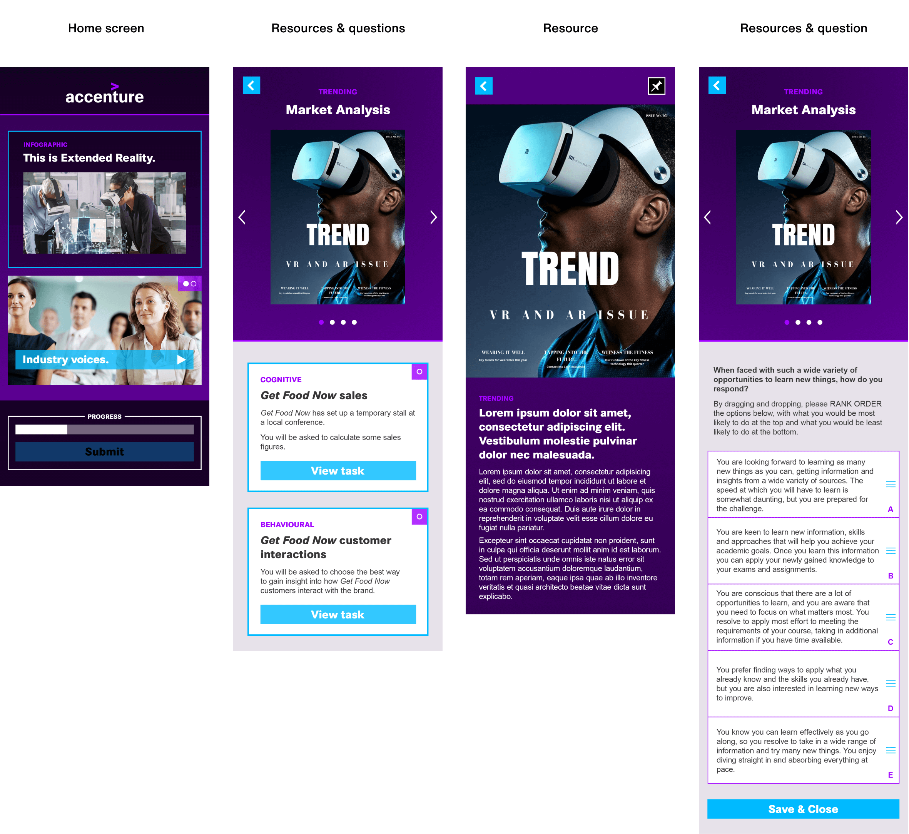
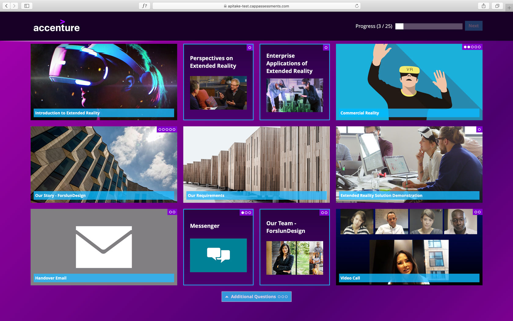
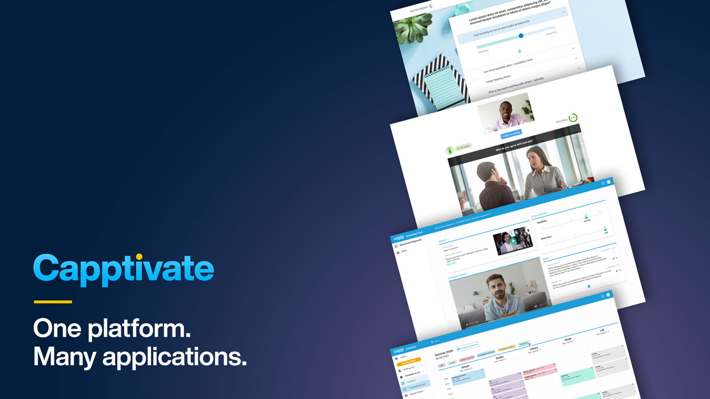

Capptivate is a customisable web-based software-as-a-service product designed to support recruitment and career development functions in large organisations. Once configured, it produces immersive branded experiences which assess individuals against predetermined frameworks of strengths and capabilities as relevant for success at any given organisation.
When I joined the parent company Capp & Co. in May 2018 (since rebranded to Cappfinity), work was already underway on the platform. Some mood boards had already been created to give a sense of how client branding could be included in an online assessment experience, and on the strength of these, Accenture and EY had signed-up to be first to use the platform.
With delivery due in September, the pressure was on to bring the promise to life. In my first meeting with the Engineering team they informed me they were already significantly behind schedule but they had started to build the infrastructure of the platform.
The engineering team had already started to build internal page infrastructure
Capp & Co. had always been more of consultancy-based business and Capptivate respresents one of its first attempts to scale and transform the business to a SaaS provider. As such, Product as a function was still relatively new, and there was not a Product Manager, Owner or Scrum Master. There was not even a dedicated Project Manager to oversee progress, so there was a lot of collaborative problem solving needed to move things along.
My initial task was to understand both what had been promised to the client as well as what the Engineering team were able to build in the time available, and do my best to produce Design work which met the needs of both. Working from the Engineering sketches, I produced high fidelity design visuals for a tile-based home screen as well as the secondary 'in-tile' view showing various stimulus and response mechanisms for both Desktop computer and Mobile devices.
My initial tile-based home screen concept
Secondary page designs showing stimuli & response interfaces
Finalised home screen framework
Whilst these experiences were initially being produced bespoke for Accenture and EY, as the project progressed a new requirement was added which was that the system being created should accommodate future builds for other clients by non-technical people. This amounted to the requirement for a Content Management System of sorts, but one which is able to configure not only the interface and upload the content, but also manage a range of assessment scoring methodologies with integration to client Applicant Tracking Systems.
Annotations to help establish a reusable custom interface framework
Mobile optimised design layouts
Screenshot of the final assessment
The project went live on schedule and won Accenture several industry awards for best candidate experience. Capptivate is now in use by Sky, NHS, KPMG, GSK, HSBC, Lloyds Banking Group, Deloitte, Aviva, Barclays and many more!
Throughout 2019 and beyond I have recruited additional designers to help expand and enhance the platform, developing further front and back-end features and functionality.
Back-end tools, content management system and more will be featured in a future case study
